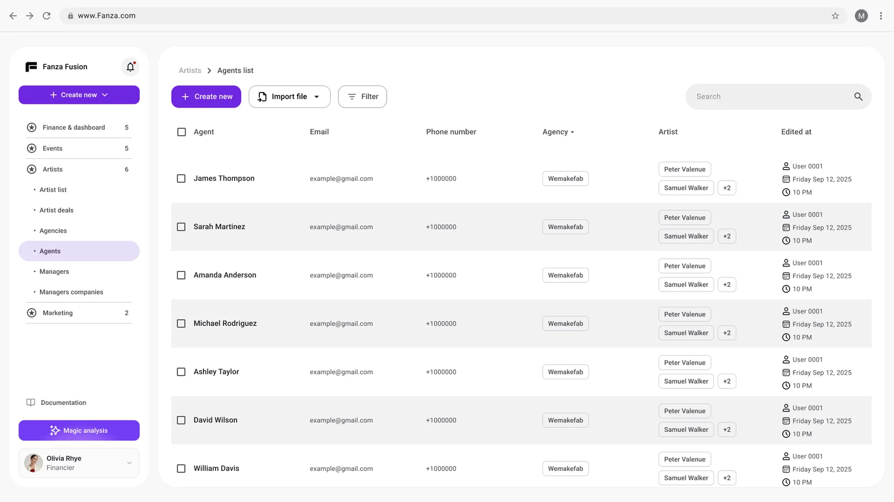
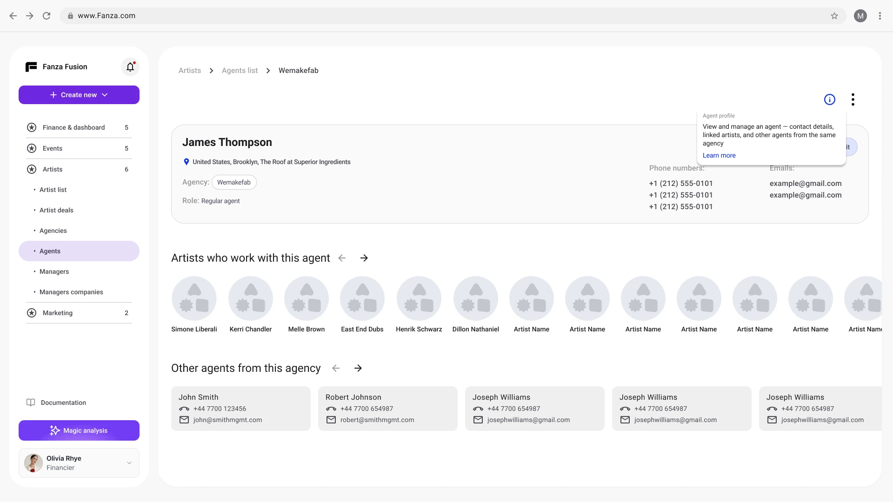
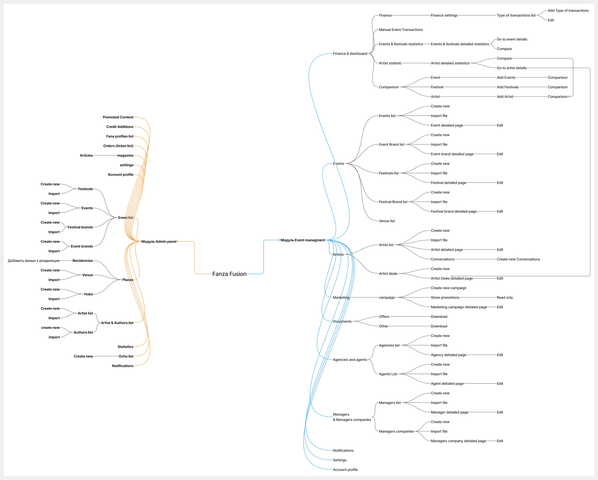
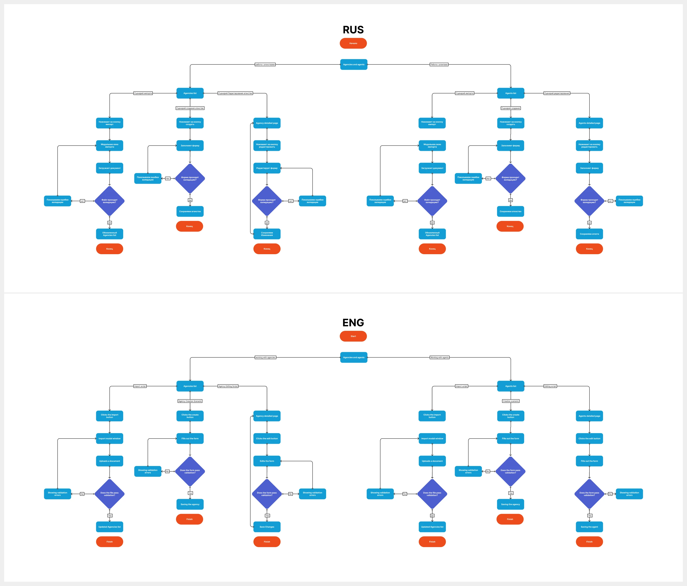

Lead UX/UI Designer · Lumex Agency
Fanza Fusion
CRM для организаторов
музыкальных событий

Задача
Объединить события, артистов, билеты, маркетинг и финансы в одной системе. Каждой команде нужен доступ к своей части работы и общим данным события.
Моя роль
Спроектировал информационную архитектуру, Product Map, User Flow, прототипы и UI Kit. Связал модули и действия с правами четырёх ролей.
Событие как центр работы команды
Карточка события объединяет маркетинг, билеты, SEO, партнёрства и подбор артистов. Связанные задачи доступны из контекста события.
Общая структура
Связал события, артистов, сделки и агентства. Отразил зависимости между сущностями в карте продукта.
Доступ по ролям
Разделил сценарии владельца, организатора, финансиста и маркетолога, включая ограничения внутри модулей.
Подсказки в интерфейсе
Добавил короткое объяснение назначения экрана и переход к документации для первого знакомства с системой.

От структуры продукта к действиям пользователя
В Product Map собрал модули и связи. В User Flow разобрал переходы, состояния и действия при работе с клиентами и агентствами.




Четыре роли и права доступа
| Роль | Зона работы |
|---|---|
| Owner / Admin | Все модули, управление пользователями и настройками. |
| Organiser | Подготовка и ведение назначенных событий. |
| Finance | Транзакции, показатели, сравнение периодов и финансовая отчётность. |
| Marketing | Кампании, промо и каналы в рамках доступных событий. |
Что предусмотрел в сценариях
- Связь списков и детальных карточек артистов, агентов и агентств.
- Работу с офферами, условиями оплаты, файлами и статусами сделки.
- Создание кампании по шаблону или с нуля из контекста события.
- Ограничения доступа на уровне модулей и отдельных действий.
- Состояния экранов и подсказки для передачи в разработку.